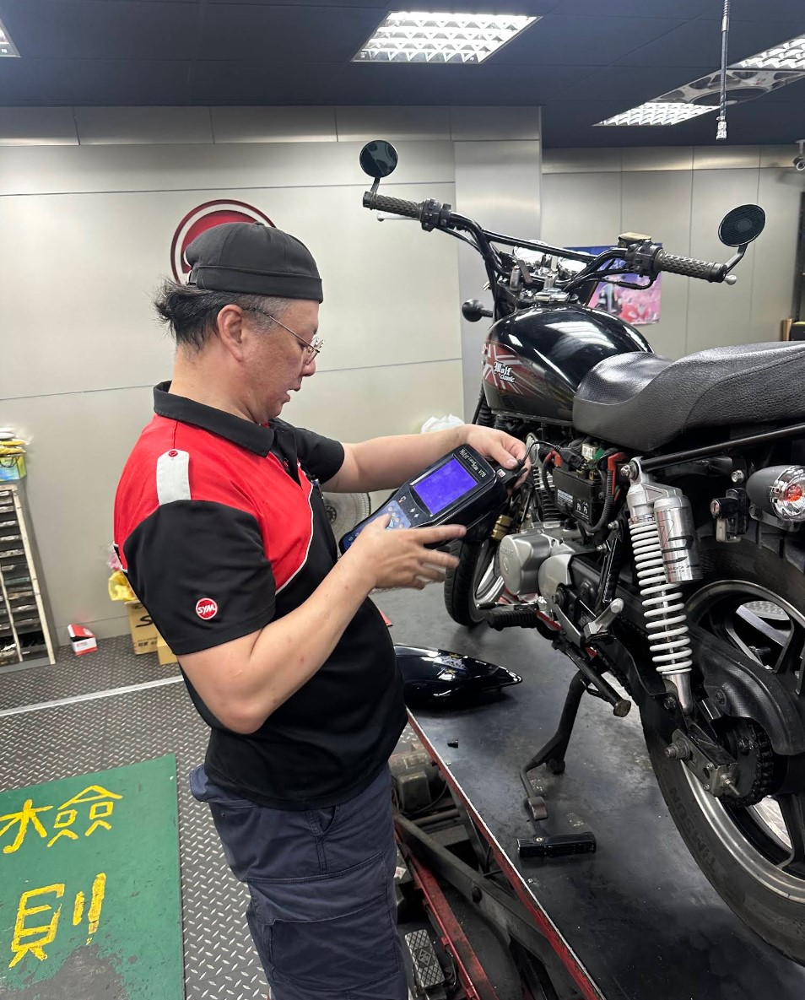
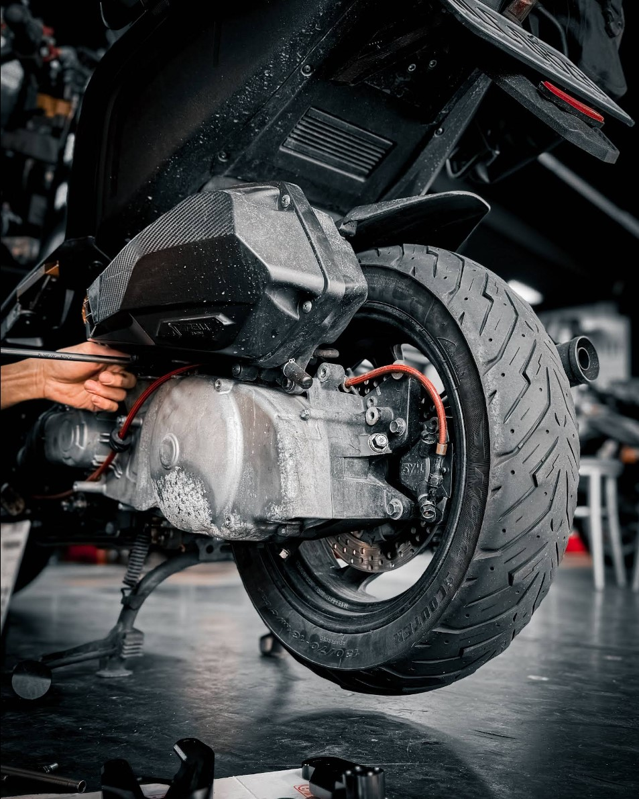
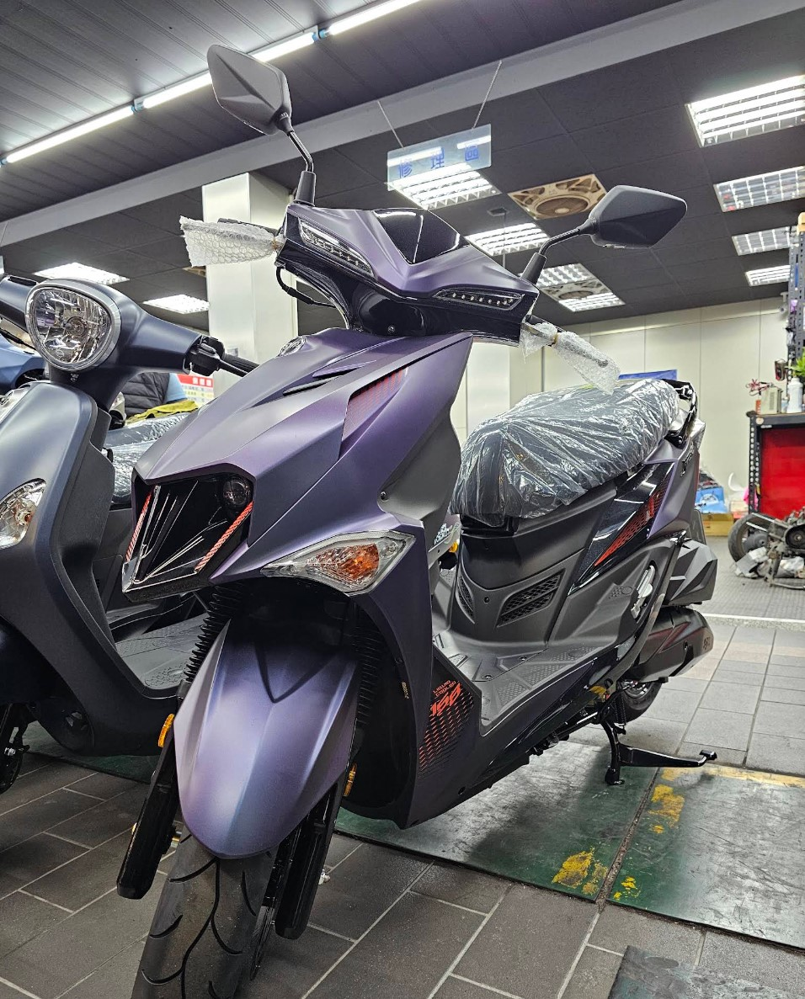

我們的四大核心服務
專業維修與大保養
嚴選 SYM 原廠材料與正規零件，搭配原廠電腦診斷儀器，精準定位故障不猜測，讓愛車恢復最佳性能。
免費機車排氣檢驗
提供年度免費排氣檢測，完成驗車即贈送精美垃圾袋乙綑，現場提醒最佳驗車月份，騎乘安心不罰款。
5公里在地道路救援
半路熄火或爆胎？提供店家周邊 5 公里內及時道路救援服務，讓您緊急時刻不再孤立無援。
免費代步機車借用
留車進行大修或定期大保養之車主，貼心提供免費代步車借用服務，讓您日常通勤不斷線。
半路熄火或爆胎，5 公里內我們出發
店家周邊提供即時道路救援
為什麼選擇旭騰車行？
施工前透明報價
技師會先進行詳細檢查，清楚說明損壞原因與零件費用，獲得車主同意後方開始施工，絕不隨意施工亂加價。
SYM 原廠技術認證
擁有多年三陽機車維修經驗與原廠診斷設備，不論是噴射系統清洗、傳動調整或引擎修復皆專業處理。
貼心服務與完善售後
維修完工皆經過嚴格路試測試，交車時主動說明注意事項，並享有原廠零件完工保固保障。
旭騰車行實景
歡迎親臨板橋旗艦店，感受專業服務環境



可維修 SYM 三陽車款
以下為常見車款，其他車款歡迎電話洽詢，我們盡力服務
Jet 系列
Jet S、Jet SR、Jet SL
高機動城市通勤首選
DRG 系列
DRG 158、DRG BT
時尚運動大羊代表
Woo 系列
Woo 125、Woo R
輕量復古風格小羊
MMBCU
158cc 大羊全能旗艦
原廠科技智能車款
Fighter / GR
街跑操控定位
運動跑格輕檔車
其他 SYM 車款
Fiddle、Mio、Crox
各年份全系列歡迎洽詢
進廠快速檢測流程
- 1
接單諮詢
了解騎乘狀況與異音問題，進行車輛外觀檢測。
- 2
電腦診斷
連接 SYM 原廠儀器，快速精準掌握引擎與電系數據。
- 3
報價說明
向車主詳細解釋故障原因，並提供明確零件與工資報價。
- 4
施工與測試
使用正規原廠件更換，完工後進行實際路驗確保安全。
常見問題
關於保養、驗車、借車的疑問，這裡都有解答
機車多久保養一次比較好？
一般建議每行駛 3,000～5,000 公里或每 3～6 個月進行一次基本保養（機油更換）。大保養（含傳動、剎車、氣門）建議每 10,000 公里或一年一次。若常走山路或日騎超過 30 公里的車主，可縮短至 3,000 公里一保。不確定的話歡迎進廠讓技師現場評估！
機車驗車要帶哪些文件？
驗車需攜帶：行車執照、駕照、強制責任險憑證（有效期內）。若委託他人代辦，另需攜帶委託書及代辦人身分證。旭騰車行提供免費排氣檢測，完成驗車即贈垃圾袋，歡迎預約安排！
代步車怎麼借用？有哪些條件？
凡在旭騰車行辦理大保養或大修（需留車超過半天）的車主，即可免費借用代步機車。借用前請出示駕照，並依店內規定填寫借車登記表。代步車數量有限，建議提前聯繫確認。
道路救援的範圍和費用？
本店提供店家周邊 5 公里內的道路救援服務，費用依實際情況洽談，基本救援搬運對旭騰維修車主友善計費。若在範圍外遇到困難，也歡迎先來電討論，我們會盡力協助！
沒有預約可以直接進廠嗎？
歡迎直接進廠！若是簡單問題（輪胎氣壓、機油等級確認、燈泡更換）通常可當場處理。需要電腦診斷或更換零件的項目，繁忙時段可能需要稍候，建議事先來電或 LINE 預約，省去等待時間。
SYM 以外的廠牌也可以維修嗎？
本店主要專精 SYM 三陽機車，擁有原廠認證技師與診斷設備。其他廠牌一般性保養（機油、剎車皮、輪胎）可協助，但較複雜的電系或引擎問題建議洽詢各廠牌原廠服務站，以確保零件與技術的原廠品質。